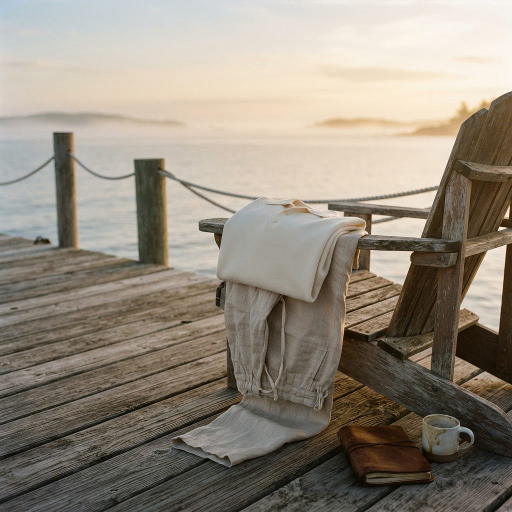

01 — Collection
The Long Weekend
Friday to Monday, made easy.
The long weekend is the stretch of days that feels like a small holiday — the kind where time slows down and the only agenda is the tide.
These are pieces built for that ease: considered enough for a dinner that runs late, relaxed enough for a morning that doesn’t start in a hurry. Made to be reached for from Friday to Monday, and long after.
Sand
Shop Sand